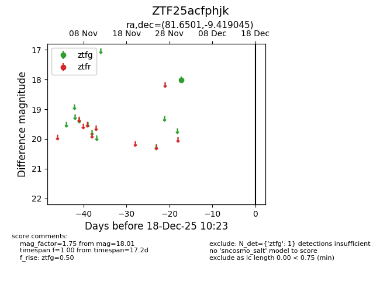
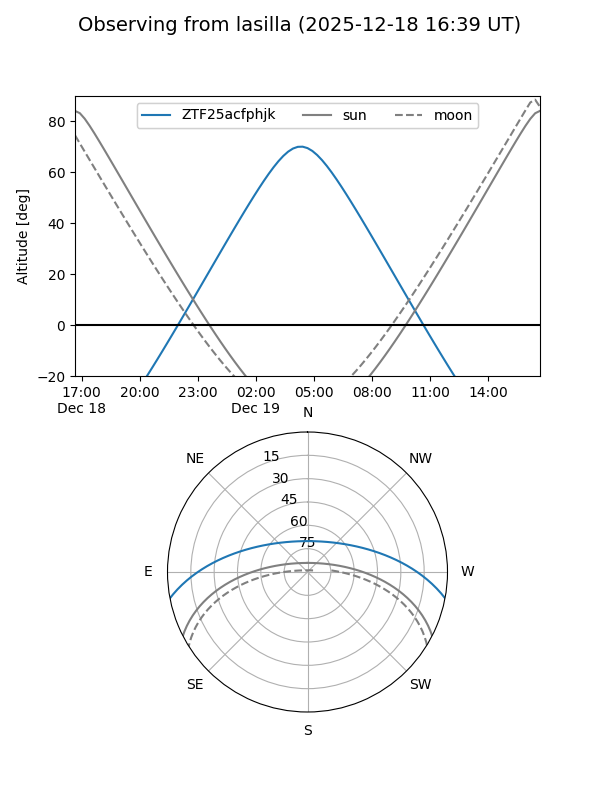
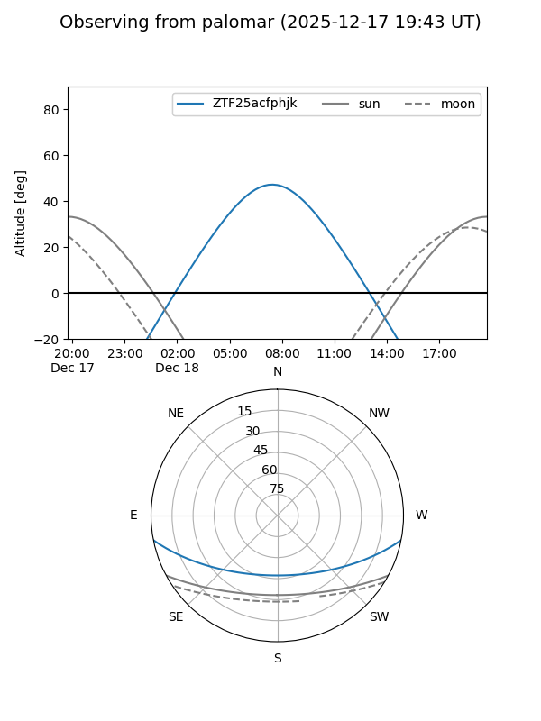

ZTF25acfphjk
Target ZTF25acfphjk at 2025-12-18 11:17
Aliases and brokers:
FINK: fink-portal.org/ZTF25acfphjk
Lasair: lasair-ztf.lsst.ac.uk/objects/ZTF25acfphjk
ALeRCE: alerce.online/object/ZTF25acfphjk
alt names
ZTF25acfphjk (ztf,fink_ztf)
Coordinates:
equatorial (ra, dec) = 81.6501,-9.41904
equatorial (HMS+DMS) = 05:26:36.03,-09:25:08.56
galactic (l, b) = (211.8673,-23.09519)
Photometry
last ztfg=18.01
1 ztfg detections
Lightcurve

Visibility


Additional plots